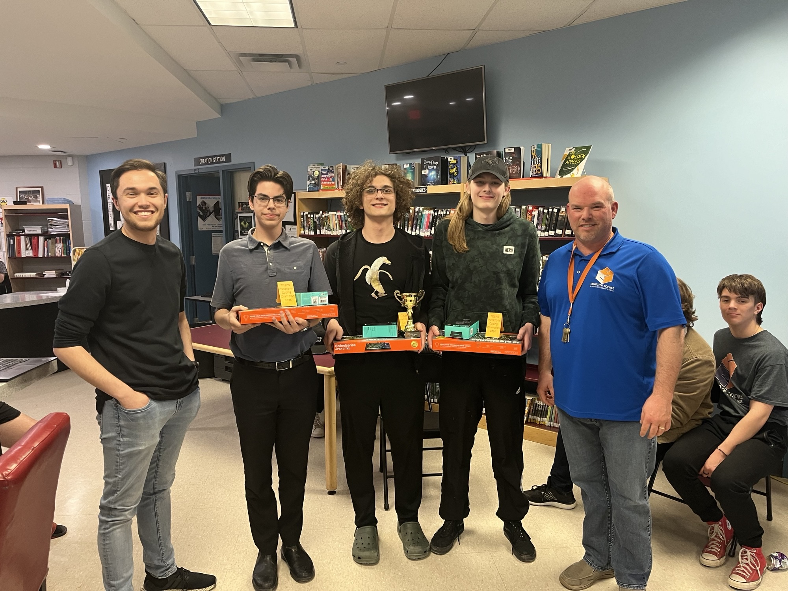
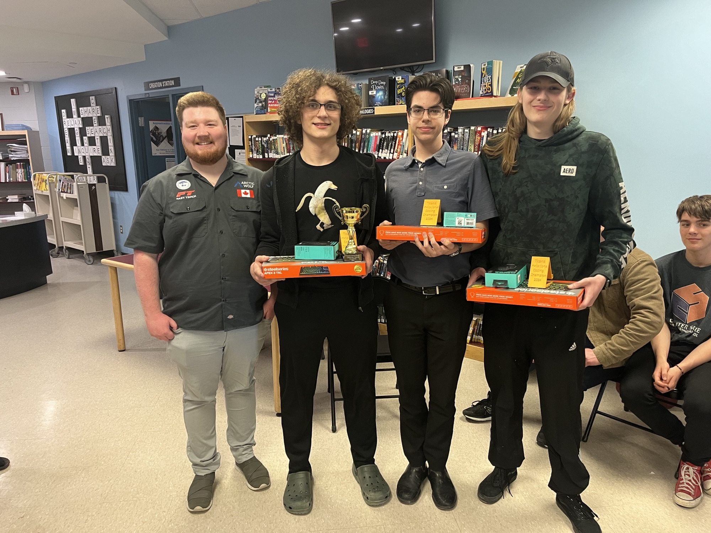

The 2nd annual ‘Titans Invitational Computer Coding Championship’ was held at St Theresa in Belleville. A team from Bayridge in Kingston coached by John Swaine and comprised of Xander Lynch, Sawyer Smith and Jack Veech won. There prize was provided by William Koester of Arctic Wolf
 
The 1st annual ‘Titans Invitational Computer Coding Championship’ was held at St Theresa in Belleville. A team from Holy Cross in Kingston coached by John Holmes and comprised of Andrew Ryce, Aaron Fisher, Dylan Reynolds, and Davin Bales took first place